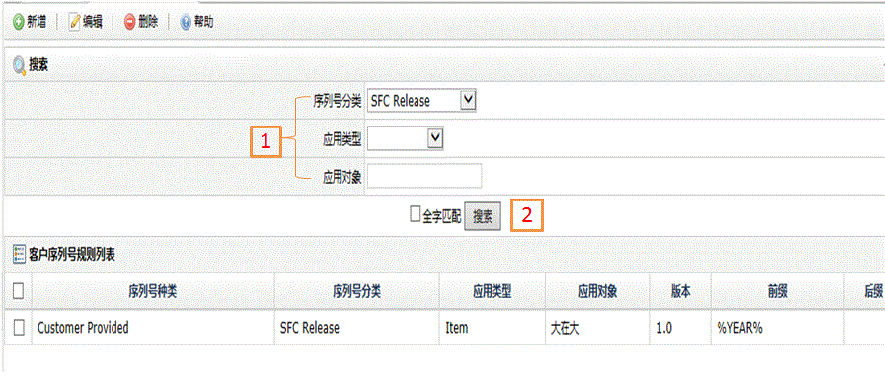
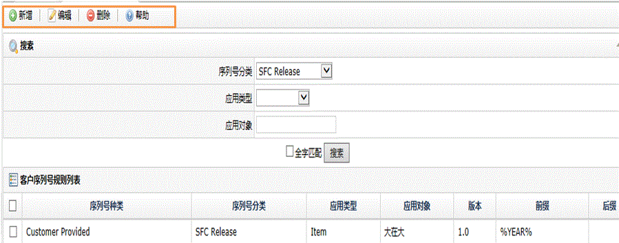
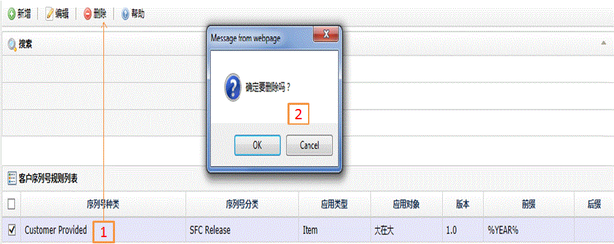

| 字段名 | 描述 |
| 序列号分类 | SFC Release:当工单释放时，产生唯一的序号对应的规则； SFC Serialize：序列化序号时，产生唯一的号码对应的规则； Shop Order：产生唯一的工单号码对应的规则； Process Lot：产生唯一批号时对应的规则； RMA Number：产生唯一返工单号对应的规则； Container Number：产生唯一容器号码对应的规则； Incident Number：系统保留； Slot Configuration：系统保留； Inventory Receipt：产生唯一的收货号码对应的规则； Customer Order：产生客户的订单号码对应的规则； Component Hold：系统保留； ECO Number：产生工程变更号码对应的规则。 |
| 应用类型 | Item：用于产品； Item Group：用于产品组； Container：用于容器（卡通，卡板等） |
| 应用对象 | 应用类型中具体的对象，如产品名，产品组名，容器名等 |
| 序列号种类 | Generate Sequence：系统规则产生序列号； Customer Provided：客户提供规则产生序列号 |
| 版本 | 当应用类型为产品时，对应的产品版本号 |
| 前缀 | 用来产生序号的前缀 |
| 后缀 | 用来产生序号的后缀 |


